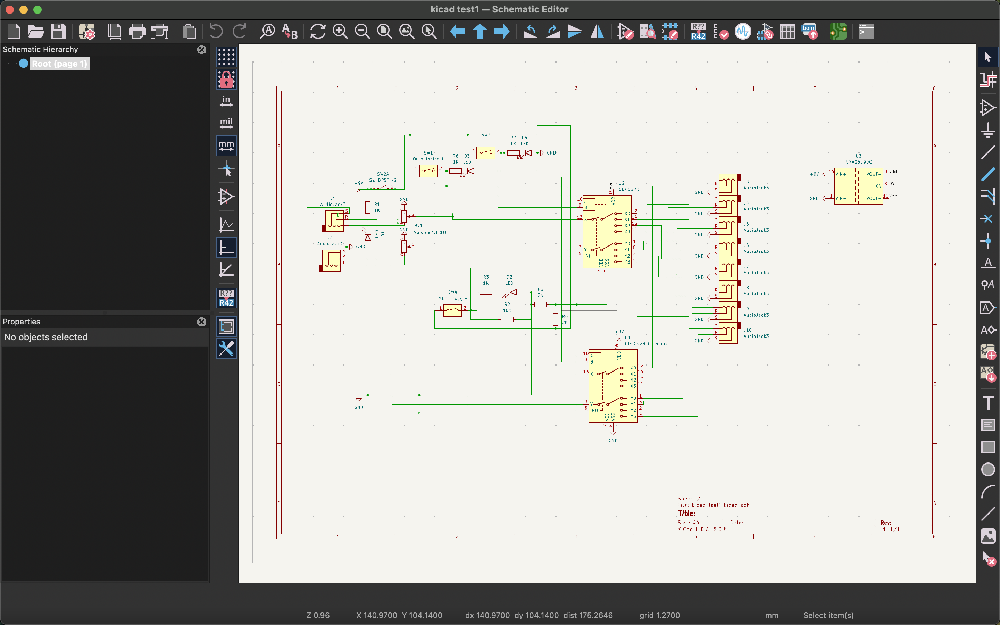
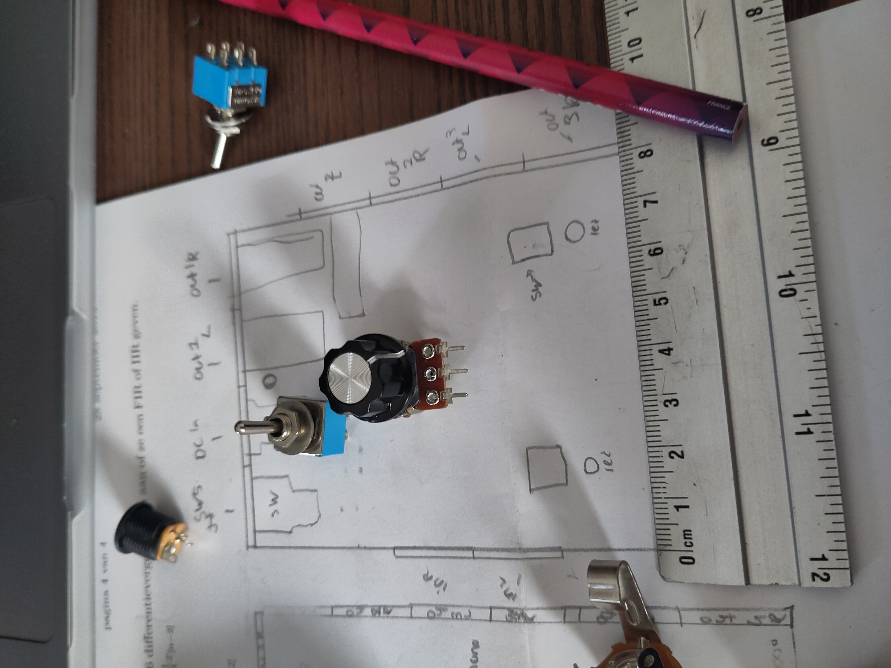
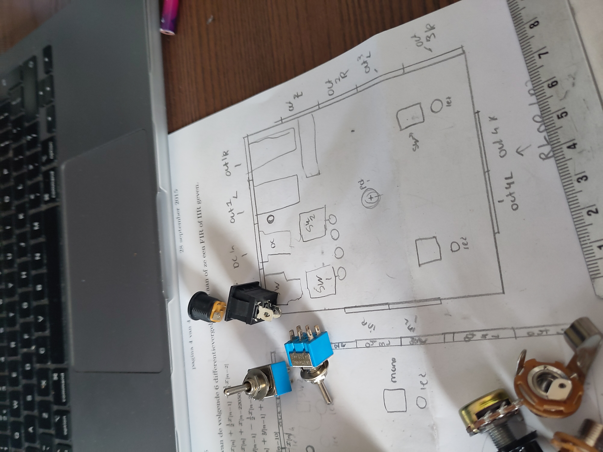

MOSCOW
Must
- Uitzoeken hoe je een 3D design kan maken en dat proberen
- Een werkbare, bruikbare output switch met minimaal twee outputs
- De Switcher is geplaytest en die feedback is verwerkt
- Er is een website die er een beetje acceptabel uitziet
- Een blog dat is bijgehouden, anders haal ik het vak ook niet
- Er is een zelfontworpen bijpassend kastje, ontworpen in Fusion
- Het proces is goed gedocumenteerd voor mijn eigen portfoliosite
Should
- Een goed uitgedacht doosje, met versieringen
- Een doosje dat is gelaserprint
- Een monoknop
- Vier wisselbare outputs
- Gebalanceerde outputs ipv. ongebalanceerd
- Dat ik een doosje in minder dan twee uur kan assembleren
- Led lampjes die aangeven welke output er aan staat
Could
- Een mooie en goed uitziende website (oeps)
- Meerdere designs, rackmounted, linkshandig etc.
- Een ingebouwde Headphone output
- Een uitgebreide test, met metingen en die online zetten
- Verkoopbare diy kits
- Een uitgewerkt financieel plan
BLOG
7 feb 25
Vandaag begonnen aan de kleine simpele site, ik hou me in. Ik ben goed bezig geweest met het maken van de schematic voor het de output switcher.
Ik ben excited voor dit project. Ik ga me met hardware richting op de hardware, duh. En voor het KO onderzoek wil ik me richten op het kastje eromheen en er echt een verkoopbaar product van maken.
9 feb 25
Vanochtend ben ik bezig geweest met het ontwerp wat het doosje zelf gaat zijn. Ik had dacht ik teken wel even wat, maar had ernstig onderschat hoeveel keuzes ik al zou moeten maken. Aan welke kant komen de inputs? waar komt het lampje dat zegt dat de switch aan is? etc etc. Het was behoorlijk passen en meten, maar in theorie zou het in een doosje van 10 bij 8 moeten passen. Ik ben wel heel erg benieuwd! Ik overweeg al meteen om meerdere versies te maken, ik zou ook een versie kunnen bouwen die bijvoorbeeld in een rack past of met twee stereo outputs of die aan de linkerkant van een bureau kan, wederom etc etc. Dit kastje is wel alles wat ik ooit heb gewild, mono mogelijkheid en nog een volumeknop. De ideale monitor controller. hopen dat het allemaal gaat werken! Ik wilde ook nog werken aan het 3D design, maar er klopten wat andere opdrachten op mijn kamerdeur.
10 feb 25
vandaag bezig geweest met een 2d plattegrond maken in fusion. Dit heb ik al eens eerder gedaan, dus dit was niet heel spannend. Wat ik had bedacht klopte gelukkig, alles past echt net! het was wel leuk om de daadwerkelijke afmetingen te zien. Ik had er al een 3d doosje van gemaakt, maar nu gingen de gaten ook door de onderkant. Klopt niet
MEDIA




Handleiding
- Begin met hard peinzen over wat je wilt bouwen, en zet duidelijk voor jezelf neer wat dit dan precies is.
- Maak dit idee cocncreter, teken schetsen, maak een moscow (wink wink), werk die schetsen uit en begin met het bedenken van de electronica.